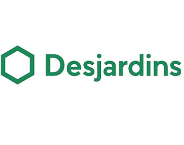
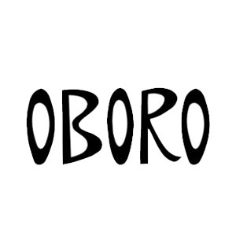
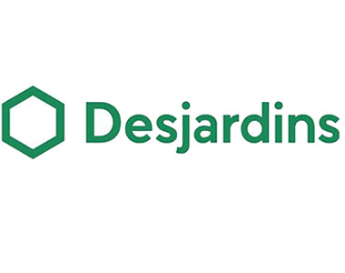
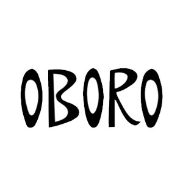

Mycocene, 2018 bio-kinetic sculpture
duration: 1-2 weeks
Mycocene is a room sized installation consisting of reanimated electronic waste sculptures and a live cell culture, all occupying a shared dimly lit space. Mycocene uses a juxtaposition of bio-art and electronic (kinetic) sculpture to critique our relation to technology, one that largely ignores the ecological impact technology has on the Earth. Using a mixture of reclaimed electronic waste and the fungal-esque organism slime mold, Mycocene acts as a hybrid between the living and the technological world.
The room of Mycocene contains five electronic waste sculptures all separated but in communication with the slime mold. The slime mold is centered in the room, bathed by a spotlight of green light that emanates to the remainder of the room. The e-waste sculptures, positioned around the cell container are separated by dimly lit, relying on the green glow of the slime mold to outline their components. Each of them are actuated by an electronic pulse modelled off the live growth and movement of the slime mold. The two are intertwined, creating a living atmosphere permeated by the sound of motors spinning, cameras zooming, hard drives spinning. The atmosphere is disharmonious, yet organic. The soundscape solely relies on the physically audible (non-curated) actuations of the sculptures. As they jolt to life, the biological pulses of the slime mold can be heard in the rhythms of the sound echoing through the space. Moving around the dim channels between sculptures, decaying security cameras start to scan, the frame of a human body emerges onto a CRT screen buried under wires. Another pulse triggers a melody punctuated by noise and static, as a magnetic tape crawls along the walls. Surrounded by electronic waste, the singular slime mold culture orchestrates an evolving performance, using the sculptures as its means of communication with the world.
> EXHIBITIONS
Elektra XX (solo exhibit) @ OBORO, Montreal QC
June 2019
MIAN – International Marketplace for Digital Art @ Centre Phi, Montreal QC
June 2019
Behavioral Matter @ Centre Pompidou, Paris FR
January 2019


> PREVIEW
> SPONSORS
 





{kind=link}
{kind=link}
{kind=link}
{kind=link}
{kind=link}
{kind=link}
{kind=link}
{kind=link}
{kind=link}